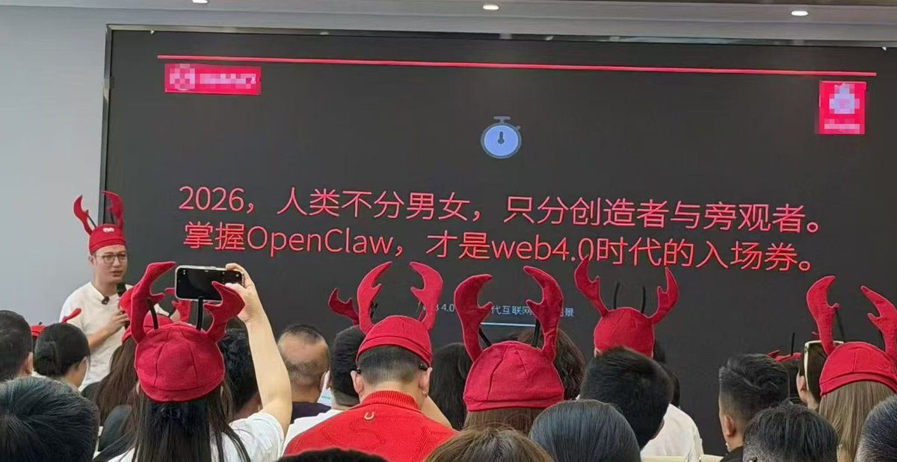

奶昔🥤
@realNyarime
@0xKatt @JackClawAI @Vito_168 @justinsuntron @connectfarm1 Web3还没搞懂就Web4了😅😅😅

奶昔🥤
@realNyarime
历史总是惊人的相似🛰️🦞 https://t.co/rtzGyPelt4
0x凯瑟琳
@0xKatt
Web4中国行·Openclaw深圳站，这场真的🔥爆了。现场人从众，技术氛围拉满，Openclaw生态展示硬核到没朋友。Web4不是概念，是正在落地的未来。深圳+Web4=创新浓度超标
@JackClawAI @Vito_168 @justinsuntron @connectfarm1 #openclaw #web4 https://t.co/lvP75poW9R